纹样、建筑、器物和地方名称仍然存在。
HOME IDENTITY / 00
BRAND & CULTURAL EXPERIENCE DESIGN
编织关系
Weaving Relationships
让文化从符号走向体验。
设计不是创造对象，
而是重新组织关系。
THE QUESTION / 01
THE QUESTION
文化仍然被看见，
为什么却越来越难以被进入？
制作、使用、共同记忆与真实场所逐渐退到背景。
对象没有消失，赋予对象意义的关系先发生了断裂。
设计需要重新组织文化形式与真实生活体验之间的连接条件。
RELATIONS INDEX / 02
READ BY RELATION
选择一段关系，
进入对应的设计问题。
关系不是标签。它说明项目试图重新连接什么。
RELATIONSHIP READING / LIVE MODULE
从原有关系，读到当前断点与目标关系。
RELATION / 01
2 PROJECTS
文化如何从被识别，逐渐走向被理解、使用与参与？
关注品牌、信息、材料与空间如何共同组织公众进入文化内容的路径。
SELECTED EVIDENCE / 03
SELECTED EVIDENCE
不是展示“做过什么”，
而是展示什么证据改变了判断。
MATERIAL / 03
纹样不是独立图形
它由经纬交错、重复单位、材料张力与制作时间共同生成。
- Relevance
- 设计应转译生成结构，而不是复制完整轮廓。
- Confidence
- High
游客主要集中在完成品区域拍照，对制作流程说明停留较少。
Implication 制作过程没有成为公众理解文化的主要入口。
现场观察 / 单一展示场景 / Confidence: Medium
BEFORE
→
年轻公众对传统工艺缺乏兴趣。
AFTER
问题更可能是现有体验缺少进入制作关系的清晰路径。
PROJECT INDEX / 04
PROJECTS AS RELATIONSHIP STUDIES
项目不是独立的答案。
它们是同一组关系问题的持续展开。
PROJECT / 01
PROJECT / 02
PRESSURE → RESTORATIVE PLACE
忘也 Daylily｜都市疗愈商业空间
把短暂休息从消费附属品转化为可进入、可选择、可带走的恢复性体验。
BRAND / CMF / VIS / SPACE 阅读完整案例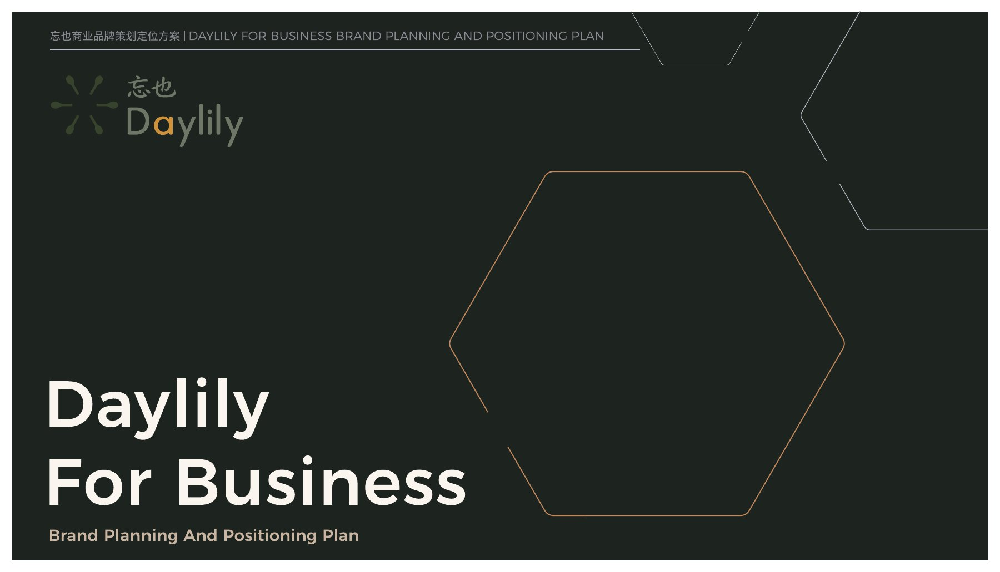
PROJECT / 03
SYMBOL → BEHAVIOR
公共符号与行为实验
检查方向、距离、反馈与空间位置如何影响公众的选择和行动。
FOCUSED PROJECT / EMERGING项目ObserveFrameTranslateFormTest
织造文化品牌系统PrimaryPrimaryPrimaryPrimarySupported
忘也 DaylilyPrimaryPrimaryPrimaryPrimarySupported
公共符号与行为实验SupportedPrimarySupportedPrimaryEmerging
公共文化参与中的所有权问题
LOCAL → PUBLIC
OPEN QUESTION可展开织造包装实验
TRADITION → CONTEMPORARY LIFE
TESTED普通场所中的使用痕迹
MEMORY → PLACE
ONGOINGPROJECT DETAIL / 01
TRADITION → CONTEMPORARY LIFE
织造文化品牌系统
Weaving Culture Identity System
传统工艺的当代表达，不应从纹样复制开始，而应从它如何被制作、使用和记忆开始。
TRADITION材料 / 制作 / 使用 / 记忆
CONTEMPORARY EXPERIENCE品牌 / 包装 / 空间 / 参与
01 / ORIGINAL CONTEXT
原始语境
纹样不是一个图形。
它是关系留下的结果。
MATERIAL
shapes
纤维与工具限制形式
PRACTICE
generates
身体动作组织交错
USE
forms
物件进入日常
MEMORY
使用积累共同经验
02 / RELATIONSHIP BREAK
关系断点
对象没有消失。
消失的是让它具有意义的关系。
BEFORE
制作使用记忆身份
CHANGE
工艺从日常使用对象逐渐转为展示与纪念对象。
NOW
制作视觉符号快速传播
纹样仍然存在，但产生纹样的制作、使用与记忆关系正在消失。
03 / READING EVIDENCE
阅读证据
证据不是被收集的材料。
证据是改变判断的力量。
公众集中观看完成品。
访客更常询问图案含义，而非制作过程。
纹样来自交错、重复、张力与时间累积。
公众接触到的是最终形式，而不是形成形式的关系过程。
04 / TRANSLATION LOGIC
转译逻辑
我们不复制看见的形式。
我们转译形成形式的关系。
SOURCE手工织造
↓
STRUCTURE交错 / 重复 / 张力
↓
PRINCIPLE先建立连接，再形成图形
↓
RULE核心形式由两个独立方向共同生成
两组方向形成开放标志。
展开动作连接分散信息。
多条阅读路径在中央交汇。
个人操作进入共同结果。
05 / EXPERIENCE FORMATION
体验生成
设计在人进入关系时，
才真正开始。
- 01被看见
入口标志让公众感知“交错”而不是完整纹样。
- 02被理解
材料与信息系统解释形式如何被生成。
- 03被使用
包装展开与空间行动使结构进入身体经验。
- 04被参与
个人选择影响正在生长的共同织图。
- 05被继续
内容、模板与档案允许关系在项目之后扩展。
STAGE / 01
Observer → Reader
入口不立即给出完整纹样，而以开放交错结构建立继续阅读的动机。
TOUCHPOINT / IDENTITY + ENTRANCE06 / EVIDENCE OF CHANGE
变化证据
设计提出了新的关系。
这段关系真的发生了吗？
能够描述两组结构逐步交错形成完整图形。
独立完成包装展开；两人首先选择错误方向。
明确理解个人结果会进入公共档案。
包装核心结构可被多数测试者完成。
生成过程可能帮助注意力从纹样转向结构。
新的理解能否形成长期参与仍未得到验证。
07 / REFLECTION
反思
项目结束了。
设计判断不应停在原来的位置。
INITIAL POSITION
→
年轻公众对传统工艺缺乏兴趣。
REVISED POSITION
现有体验缺少把兴趣转化为理解和参与的清晰路径。
多数参与者只把互动理解为个性化图案生成，公共关系没有成立。
文化来源、解释权、内容归属与长期维护不能被视觉系统取代。
参与必须让用户知道自己的行动改变了什么，并让这种改变进入后续系统。
开放问题：当传统工艺进入新的品牌与体验系统时，如何避免它再次成为一种更精致、更具互动感的文化消费形式？
PROJECT DETAIL / 02
PRESSURE → RESTORATIVE PLACE
忘也
Daylily
一个面向都市人群的疗愈商业空间：不是逃离日常，而是在日常中重新获得片刻呼吸、感知与选择。
- Role
- Research / Strategy / Brand / CMF / VIS / Space
- Format
- Independent portfolio project
- Evidence
- Market research / audience analysis / touchpoint prototypes
- Source
- 189 Illustrator artboards / 2026
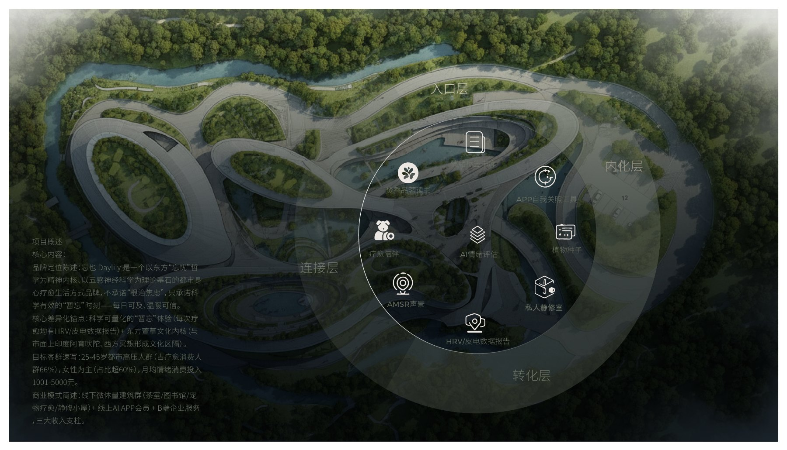
01 / READ
CONTEXT & EVIDENCE
当“休息”也需要被安排，
疗愈空间应该提供什么？
项目从行业、市场、竞品与目标人群切入，识别到都市疗愈消费中的共同矛盾：人们需要短时恢复，却不希望被迫进入统一的仪式、审美或情绪脚本。
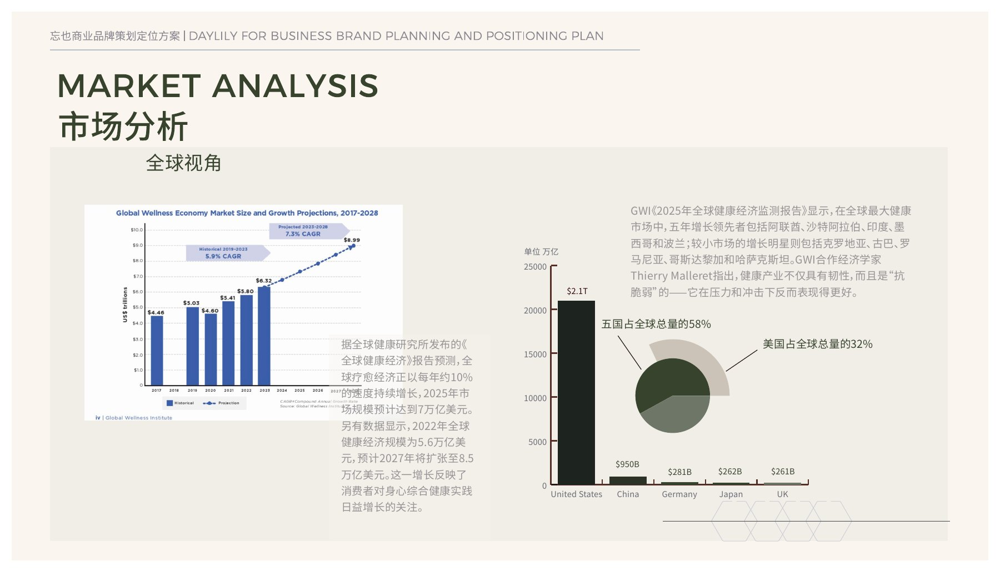
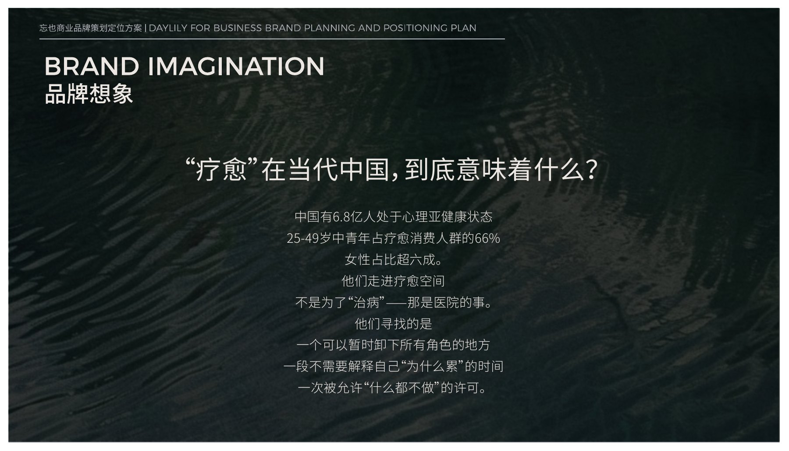
02 / FRAME
RELATIONSHIP PROPOSITION
让每一个都市人，
都有一株属于自己的“忘忧草”。
Daylily 不把疗愈定义为一次被动服务，而是把品牌、材料、视觉和空间触点组织成一段自主恢复路径：靠近、停留、感知、带走，并允许下一次重新进入。
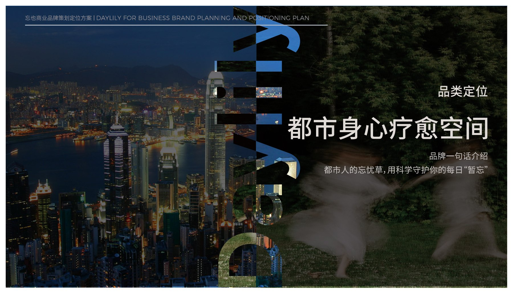
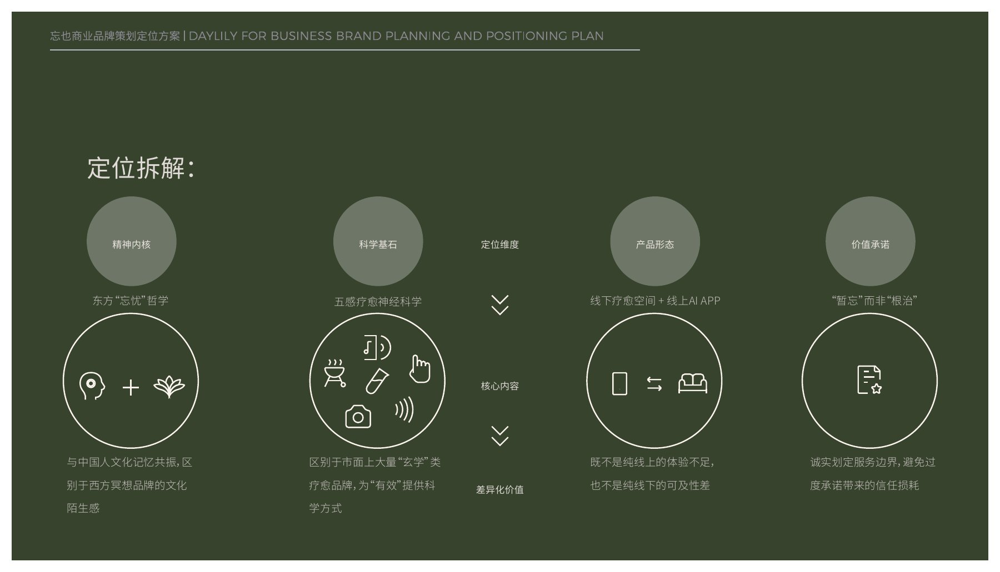
- 01松开被规定的恢复方式
- 02用自然材料降低感官负担
- 03让短暂停留也形成完整体验
- 04把空间记忆带回日常生活
03 / TRANSLATE
IDENTITY AS A LIVING SYSTEM
从萱草的生长与舒展，
生成可延展的视觉语言。
标志并不是孤立图形。花瓣、放射、生长节点与开放边界共同构成生成规则，使品牌能在导视、材料、出版物与空间触点之间保持同一种关系语法。
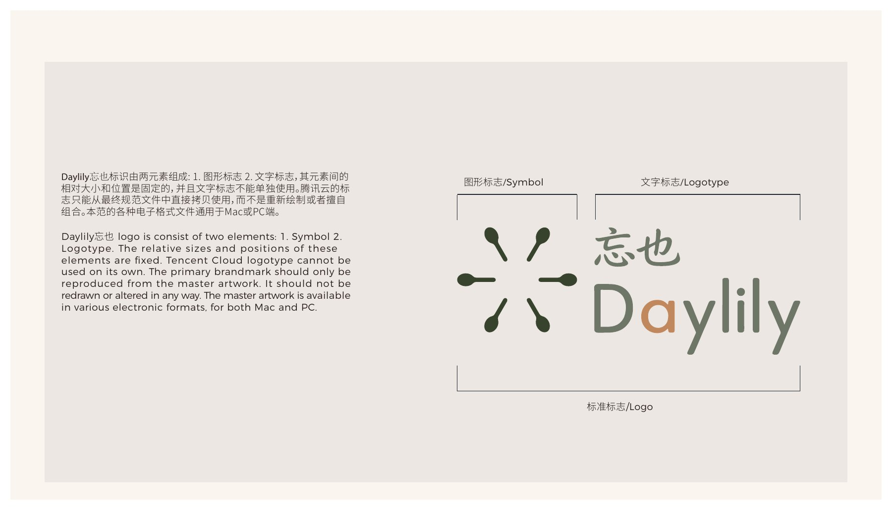
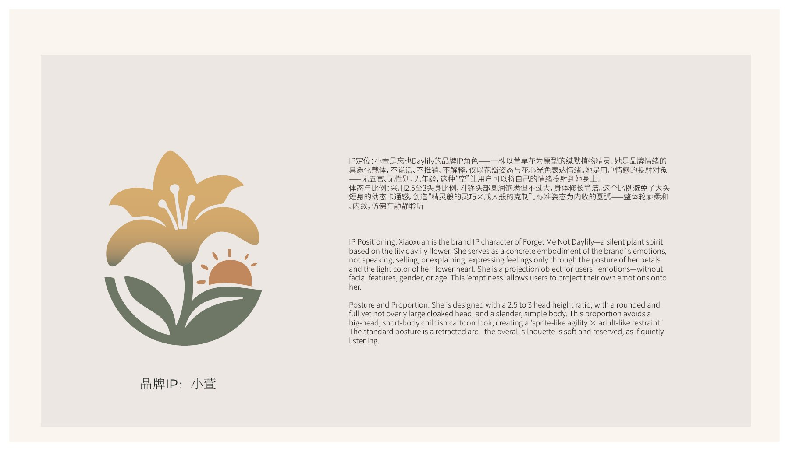
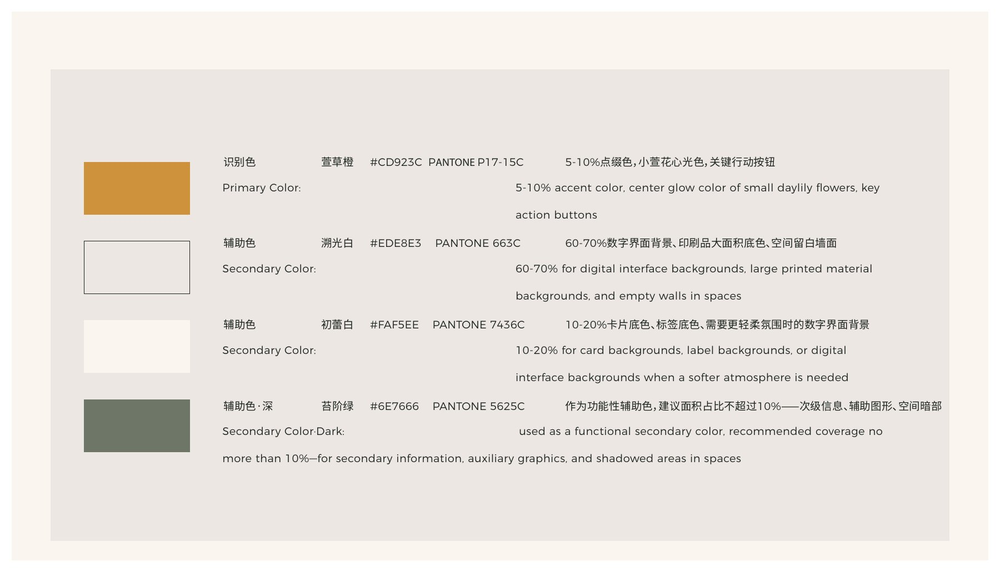
04 / FORM
CMF & TOUCHPOINTS
把安静做成可以触摸、
翻阅与随身携带的东西。
低饱和植物绿、温暖纸色、半透明层与细微压印形成材料基调。触点从名片、折页和气味卡延伸到随身物件，让体验离开空间后仍能继续。
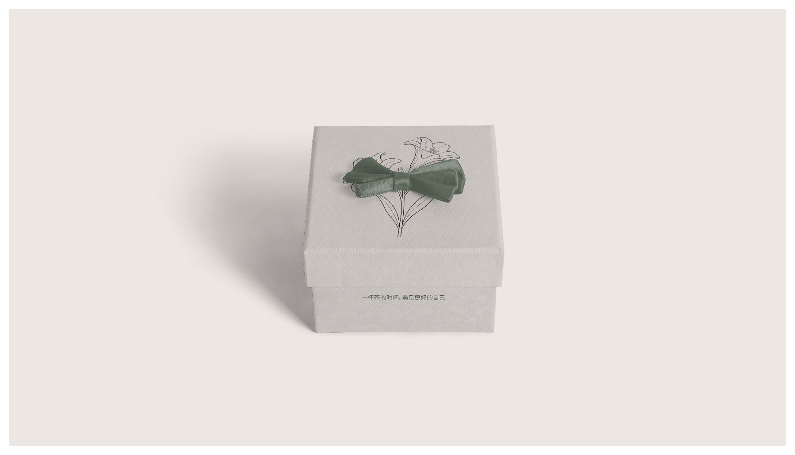
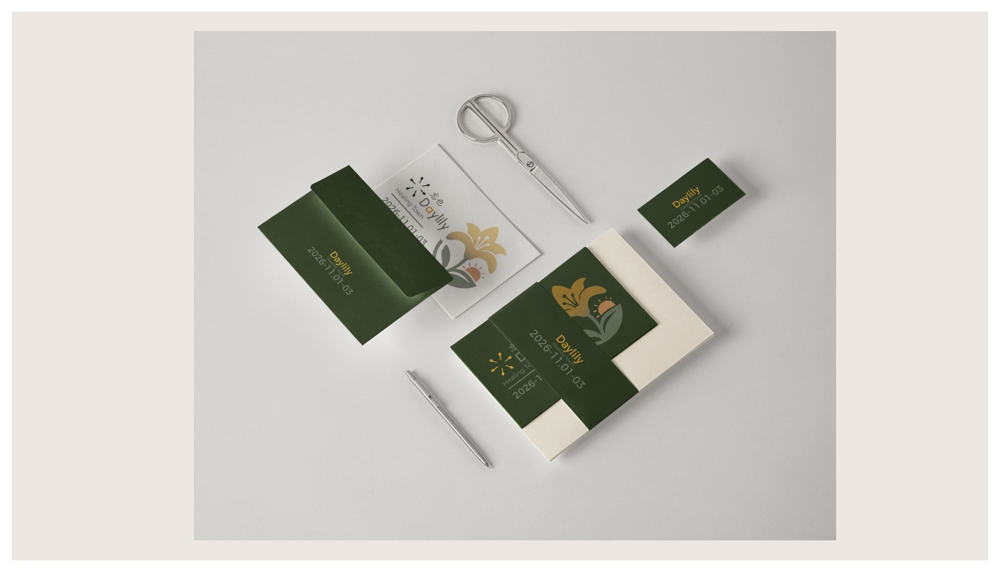
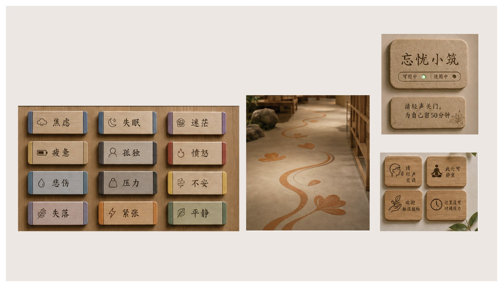
05 / EXPERIENCE
FROM BRAND TO PLACE
最终交付的不是一套视觉，
而是一条恢复路径。
空间、品牌与物料共同承担体验职责：环境帮助身体慢下来，信息降低选择压力，材料建立触觉记忆，随身触点则把短暂恢复延伸到日常。
项目下一阶段将补充真实场景测试：停留时长、触点使用顺序、情绪自评以及再次到访意愿。
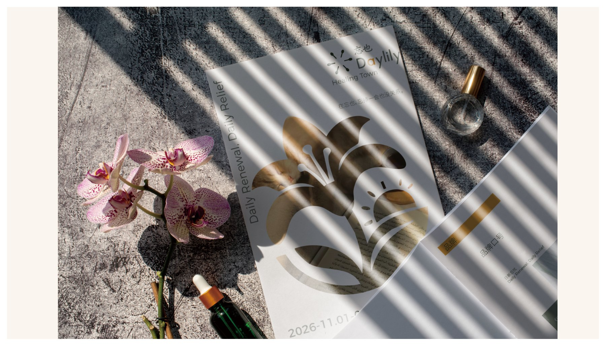
PRACTICE / 05
HOW OLEANDER WORKS
设计不是从答案开始。
它从重新阅读对象之间的关系开始。
01 / READ
关系阅读
设计对象原本处于怎样的关系中？
从场景、材料、行为与相关者开始，理解对象如何形成、被使用和进入共同记忆。
- Methods
- 现场观察 / 相关者访谈 / 材料分析 / 使用路径记录
- Outputs
- 语境地图 / 关系地图 / 来源记录 / 研究边界
- Project Evidence
- 织造项目：材料、制作、使用与记忆链
文化阅读
来源、解释权、呈现与使用边界。
关系策略
相关者、断点、触点与延续机制。
空间与叙事体验
时间、路径、材料、信息与参与。
可持续生长的系统
扩展、维护、治理与版本迭代。
CULTURAL AND PARTICIPATORY RESPONSIBILITY
文化不是等待设计师提取的素材库。进入地方、传统、记忆与公共叙事时，必须同时讨论来源、解释权、参与方式、成果归属与长期维护。
ABOUT / 06
THE PERSON BEHIND OLEANDER
刘旋
LIU XUAN
品牌与文化体验设计师
Brand & Cultural Experience Designer
我关注的不是文化看起来像什么，而是它如何与人、地方和当代生活继续发生关系。
PORTRAIT / WORKING CONTEXT
Replace with an authentic portrait
01 / POSITION
设计不是创造对象，而是重新组织关系。
产品设计训练让我从材料、结构和使用开始思考；文化项目让我进一步意识到，物件的意义来自它如何被制作、由谁使用、处于什么地方，以及如何进入共同记忆。
从物件到持续实践
- OBJECT
从材料、结构、人体尺度与使用开始。
- CONTEXT
认识到对象无法脱离地方和人被完整理解。
- RELATION
把注意力从单一对象转向对象之间的连接方式。
- EXPERIENCE
通过品牌、空间、信息和行为组织进入路径。
- PRACTICE
Oleander 成为持续研究这些关系的方法。
语境阅读
在形式出现前，建立准确的问题和文化来源。
关系定义
将模糊目标转化为可讨论、可验证的命题。
转译系统
从来源结构建立跨品牌、包装、空间与互动的规则。
叙事体验
让复杂内容通过视觉、空间与行为逐步被理解。
文化与语境研究
品牌与体验策略
视觉与信息系统
跨媒介转译
设计研究与原型
空间叙事
展览体验
参与式系统
运营思考
体验验证
建筑与工程
专业策展
历史与人类学研究
技术开发
长期文化运营与治理
CONTACT / 07
BEGIN WITH A RELATIONSHIP
合作可以从一个
尚未被清楚定义的问题开始。
你可以带来一项文化内容、一个品牌、一个场所，或一套已经存在但彼此分离的设计。
- 01 PURPOSE
- 02 OBJECT
- 03 RELATION
- 04 CONTEXT
- 05 CONTACT
EMAILhello@example.com请替换为真实专业邮箱
PROFESSIONAL PROFILELinkedIn / Portfolio Profile请替换为真实链接
AVAILABILITY
Role Opportunities / Open
Project Collaboration / Selective